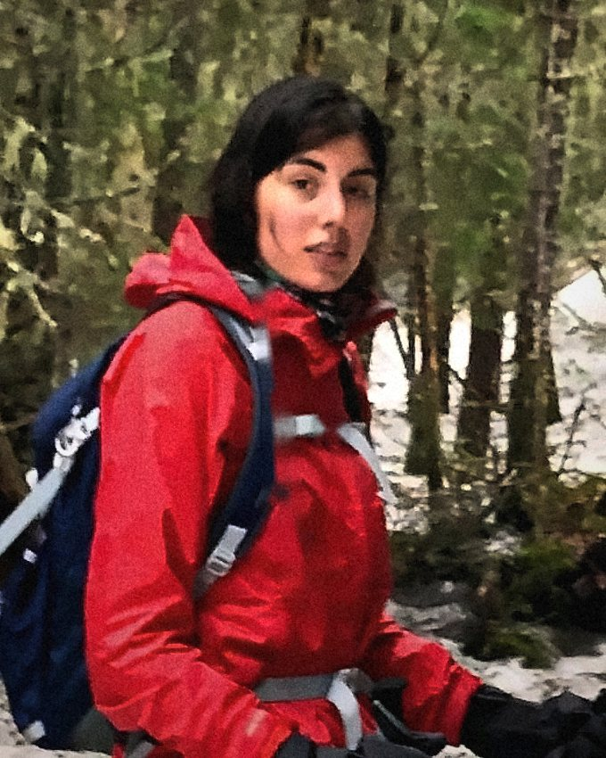

Man or bear? Which would women rather encounter on a hiking trail?
I have contended with both. On why women keep choosing the bear, and why they belong in the woods anyway.
June 24, 2024
I am the associate editor of Ideas at The Boston Globe. I edit and write essays for our weekly issue, which runs in print on Sundays. My interests are wide, ranging from literature and the outdoors to human rights and foreign affairs. I look for writers who immerse themselves in unusual places in order to find out something interesting about the world or themselves, whether that's bushwhacking through the wilderness or reading old letters in an archive — and then tell readers about their discoveries with style. If that's you, let's talk.
As for me, I've brought new voices into the Globe's pages, interviewed Jonathan Haidt, Rebecca Solnit, and Robert Macfarlane, and written about dictators, free speech, and everyone's favorite viral social media question: Man or bear? I also produced the Wild Issue, a special edition of Ideas on the changing relationship we have with nature.
I came to editing from a decade in journalism and human rights. Before the Globe I was the inaugural senior editor of Harvard Public Health magazine, where I built its digital operation from the ground up, a senior researcher at PEN America, and an investigator at Physicians for Human Rights and Amnesty International, where my work on Kashmir got me expelled from India. My writing has appeared in The New York Times, Foreign Affairs, The Boston Globe, Al Jazeera, and The Hindu.
Available for freelance editing, writing, and research projects.Get in touch
I have contended with both. On why women keep choosing the bear, and why they belong in the woods anyway.
June 24, 2024Robert Macfarlane, author of Is a River Alive?, on getting outside as a spiritual practice rather than an achievement.
October 7, 2025Rebecca Solnit, on her new essay collection, and why despair is a luxury the moment can't afford.
May 19, 2025Emily Hunt Kivel's Dwelling turns the search for somewhere to live into a modern fable.
October 19, 2025Mary Anne Franks on what the First Amendment actually defends, and whom it leaves out.
December 26, 2024Jonathan Rauch's case that a weakened church has left liberalism without a moral ballast.
March 13, 2025A special edition of Globe Ideas that goes to mountaintops, rivers, urban parks, and open fields to unearth surprising stories about what nature means today. Daegan Miller learns to mow his suburban lawn with a hand scythe. Mardi Fuller walks readers through what it is to be a Black woman in the wilderness. Marissa Ortega-Welch shoulders a pack for the 200-plus miles of the John Muir Trail to see how technology is changing the backcountry. The issue features custom art, a photo essay on the wilds of Mount Washington, and more.
Read the issue